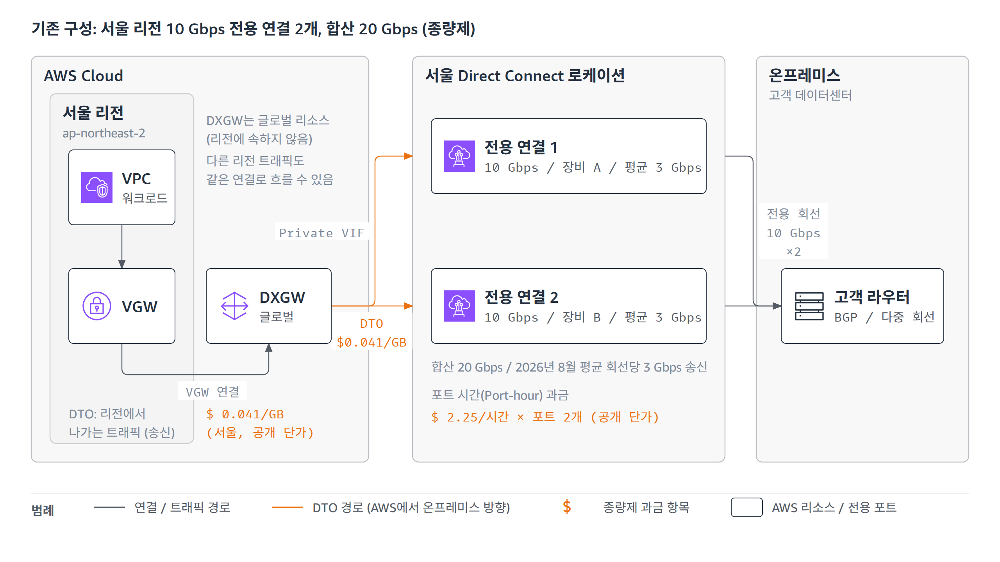
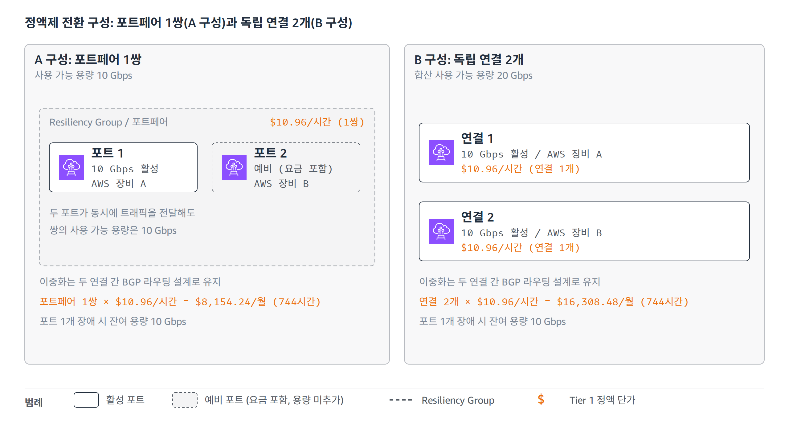
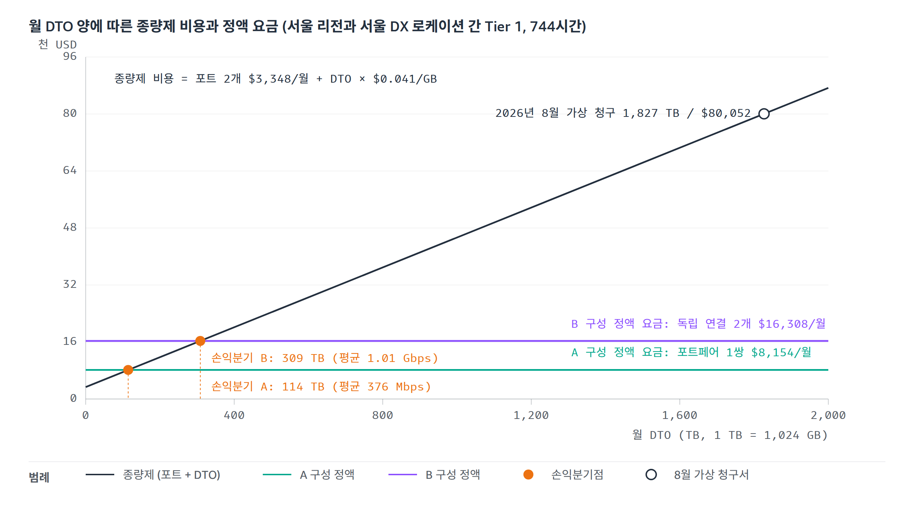
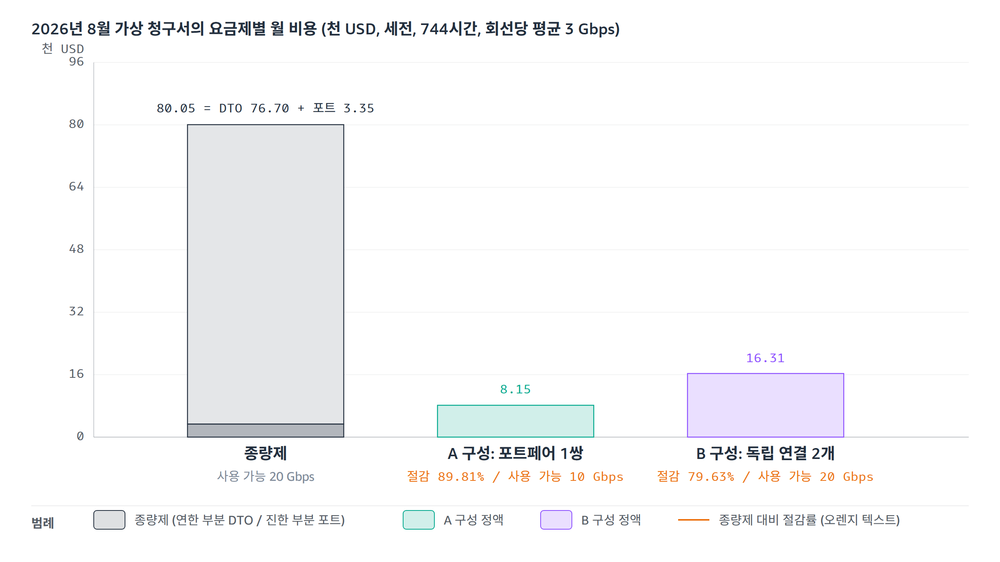

종량제 Direct Connect를 정액 요금제로 전환하면 언제부터 유리한지, 포트페어와 독립 연결 중 무엇을 선택해야 하는지를 서울 리전 10 Gbps 전용 연결 2개 사례로 계산합니다. 서울 Tier 1 경로에서는 회선 용량의 5% 안팎만 꾸준히 사용해도 정액제가 유리하며 회선당 평균 3 Gbps를 가정한 가상 청구서에서는 79.63~89.81%의 비용 절감이 예상됩니다. 구성은 필요한 용량으로 정하고 전환 전에 Tier 범위 밖 DTO와 로케이션 단위 요금제 제약을 확인해야 합니다.This post uses two 10 Gbps dedicated connections in the Seoul Region to calculate when converting pay-as-you-go Direct Connect to flat-rate pricing starts to pay off and whether to choose a port pair or standalone connections. On the Seoul Tier 1 path, flat-rate pricing is the better choice if you steadily use only around 5% of the circuit capacity, and the hypothetical bill that assumes an average of 3 Gbps per connection shows estimated cost savings of 79.63 to 89.81%. Choose the configuration by the capacity you need, and before converting, check DTO outside the tier and the per-location pricing model constraint.
2026년 9월 15일 AWS는 10 Gbps와 100 Gbps 전용 연결(Dedicated Connection)에 정액 요금제(Flat-rate pricing)를 출시했습니다. 시간당 고정 단가만 내면 선택한 Tier 범위의 DTO(Data Transfer Out, 데이터 전송 아웃, 이하 DTO)는 GB 단위로 과금되지 않습니다. 이 글은 서울 리전에서 10 Gbps 전용 연결 2개(합산 20 Gbps)를 운영하는 일반적인 사례로 세 가지를 계산합니다. 종량제(Pay-as-you-go)에서 정액제로 전환할 때 손익분기점은 어디인지, 포트페어(Port-pair)와 독립 연결 중 무엇을 선택해야 하는지, 전환 전에 무엇을 확인해야 하는지입니다. 금액은 2026년 9월 17일 기준 공개 단가로 2026년 8월 한 달(744시간)의 가상 청구서를 만들어 계산했습니다.
01
종량제 Direct Connect 요금은 포트 시간(Port-hour)과 DTO 두 가지 기준으로 구성됩니다. 포트 시간은 연결이 프로비저닝된 시간에 비례하고 DTO는 AWS 리전에서 Direct Connect 로케이션으로 나가는 트래픽 양에 GB 단위로 과금됩니다. 트래픽이 많은 고객에게는 DTO가 청구서의 대부분을 차지하고 이 금액은 사용량에 따라 매월 다르게 청구됩니다.
정액 요금제는 이 두 가지 기준을 하나의 시간당 고정 단가로 합칩니다. 단가는 연결 대역폭(10 Gbps 또는 100 Gbps)과 고객이 선택한 Tier로 결정되며 월 비용은 시간당 단가에 프로비저닝 시간을 곱한 값으로 확정됩니다. Tier는 트래픽이 출발하는 AWS 리전과 포트가 위치한 Direct Connect 로케이션의 조합, 곧 경로(Path)의 지리적 거리로 나뉩니다. Tier 1은 같은 메트로, Tier 5는 전 세계 리전을 포함하며 상위 Tier는 하위 Tier의 경로를 모두 포함합니다.
| 비교 항목 | 종량제(Pay-as-you-go) | 정액제(Flat-rate) |
|---|---|---|
| 용량 비용 | 포트 시간당 과금 | 대역폭과 Tier로 정해지는 시간당 고정 단가 |
| DTO | GB 단위 과금 | 선택한 Tier에 포함된 리전은 과금 없음 |
| 비용 예측 가능성 | 낮음 | 높음 |
| 이중화 | 고객이 설계하고 추가 비용 부담 | 포트페어로 기본 제공 |
| 적용 연결 유형 | 전용 연결과 호스팅 연결 | 전용 연결만 |
표 1. 종량제와 정액제의 요금 구조 비교
정액 요금에 무엇이 포함되고 무엇이 별도 청구되는지는 전환 전에 반드시 확인해야 합니다. Pricing Guide에 따르면 포트 시간, 선택한 Tier에 포함된 리전에서 나가는 DTO, AWS로 들어오는 데이터 전송, 포트페어의 두 번째 포트가 정액 요금에 포함됩니다. Tier 범위 밖 리전에서 나가는 DTO, SiteLink 데이터 전송, 크로스 커넥트와 코로케이션 비용, 통신사 회선료, Transit Gateway 데이터 처리 같은 다른 AWS 서비스 과금은 별도입니다.
02
예시 구성은 서울 리전(ap-northeast-2)의 워크로드를 서울 Direct Connect 로케이션에 프로비저닝한 10 Gbps 전용 연결 2개로 온프레미스 데이터센터에 연결합니다. 두 연결은 서로 다른 AWS 장비에 종단돼 이중화를 이루고 Direct Connect Gateway와 가상 프라이빗 게이트웨이(VGW)를 거쳐 VPC에 도달합니다. 두 연결 모두 종량제로 운영되며 합산 사용 가능 용량은 20 Gbps입니다.

종량제 월 비용은 포트 비용과 DTO 비용의 합입니다. 2026년 8월(744시간)을 기준으로 두 연결이 각각 평균 3 Gbps, 합산 평균 6 Gbps의 트래픽을 AWS에서 온프레미스로 보냈다고 가정해 가상의 청구서를 만들었습니다. 10 Gbps 전용 포트의 공개 단가는 시간당 2.25 USD이고 DTO 단가는 서울 리전에서 서울 로케이션으로 나가는 트래픽 기준 0.041 USD/GB입니다.
| 항목 | 산정 기준 | 금액(USD) |
|---|---|---|
| 포트 비용 | 2.25 USD/시간 × 포트 2개 × 744시간 | 3,348.00 |
| DTO 비용 | 평균 6 Gbps × 744시간 = 1,826.99 TB(1,870,840.79 GB) × 0.041 USD/GB | 76,704.47 |
| 종량제 합계 | 80,052.47 |
표 2. 2026년 8월 가상 청구서(USD, 세전). 회선당 평균 3 Gbps(사용률 30%) 기준이며 1 TB = 1,024 GB, 1 GB = 2^30 바이트로 환산했습니다.
03
정액제는 전용 포트를 어떻게 묶느냐에 따라 과금 단위와 사용 가능한 용량이 달라집니다. 같은 물리 회선 2개를 유지하더라도 두 가지 구성이 가능합니다.

포트페어는 같은 속도와 같은 Tier의 전용 포트 2개를 서로 다른 AWS 장비, 또는 서로 다른 로케이션에 프로비저닝해 한 쌍으로 묶은 구성입니다. 두 포트를 Resiliency Group(복원력 그룹)에 넣으면 AWS가 조건을 충족하는 포트를 자동으로 페어링해 포트페어로 과금합니다. 한 포트에 장애가 발생하면 다른 포트가 연결을 유지하고 두 번째 포트는 추가 요금 없이 쌍의 정액 요금에 포함됩니다. 두 포트가 동시에 트래픽을 전달할 수는 있지만 User Guide에 따르면 쌍의 사용 가능 용량(Effective bandwidth)은 포트 1개 용량으로 제한됩니다. 10 Gbps 포트페어의 사용 가능 용량은 20 Gbps가 아니라 10 Gbps이며 20 Gbps가 필요하면 10 Gbps 포트페어 2쌍을 구성해야 합니다. Resiliency Group은 과금을 위한 논리 그룹이며 VIF와 BGP 구성은 바뀌지 않습니다. Active-Active와 Active-Standby 중 무엇을 사용할지도 기존처럼 고객이 정하되, A 구성에서는 두 연결 합계가 10 Gbps를 넘지 않게 관리해야 합니다.
독립 연결은 각 전용 연결에 정액 요금제와 Tier를 설정하되 Resiliency Group에 넣지 않고 개별로 운영하는 방식입니다. 각 연결의 용량을 온전히 사용할 수 있고 정액 요금은 연결마다 따로 청구됩니다. 같은 대역폭과 Tier에서 독립 연결 1개와 포트페어 1쌍은 정액 요금도 사용 가능 용량(10 Gbps)도 같고 차이는 두 번째 포트의 이중화가 포함되는지뿐입니다. 포트 1개만 사용한다고 해서 요금이 줄어들지는 않으며 독립 연결 2개로 20 Gbps를 확보하면 정액 요금은 포트페어 1쌍의 두 배가 청구됩니다. 이중화는 포트페어와 같은 연결별 BGP로 구성하며 두 번째 포트가 요금에 포함되지 않는다는 점만 다릅니다.
| 비교 항목 | A 구성: 포트페어 1쌍 | B 구성: 독립 연결 2개 |
|---|---|---|
| 구성 단위 | 전용 포트 2개를 1쌍으로 구성 | 전용 포트 1개를 개별 운영 |
| 정액 요금 청구 대상 | 포트페어 1쌍 | 연결 2개 |
| 쌍 또는 연결 1개의 사용 가능 용량 | 10 Gbps | 10 Gbps |
| Tier 1 시간당 요금 | 1쌍당 10.96 USD | 연결 1개당 10.96 USD |
| 월 정액 요금(2026년 8월, 744시간) | 8,154.24 USD | 16,308.48 USD |
| 요금에 포함되는 이중화 | 쌍 안의 두 번째 포트 포함 | 없음 |
| 이중화 방식 | 연결별 BGP(기존과 동일) | 연결별 BGP(기존과 동일) |
| 장비 분리 | 페어링 조건으로 보장 | 기존 구성을 따름 |
| 사용 가능 용량(평상시 → 포트 1개 장애 시) | 10 Gbps → 10 Gbps | 20 Gbps → 10 Gbps |
표 3. 물리 회선 2개 기준 두 구성의 비교(서울 Tier 1 공개 단가, 2026년 10월 12일 확인)
요금을 정하는 것은 필요한 용량입니다. 10 Gbps마다 포트페어 1쌍이나 독립 연결 1개가 필요하고 그만큼 정액 요금이 청구됩니다. 가상 청구서의 합산 평균 6 Gbps는 A 구성의 사용 가능 용량 10 Gbps 안에 들어옵니다. 다만 쌍의 사용 가능 용량은 10 Gbps로 정해져 있으므로 Peak가 이를 넘는다면 B 구성이나 포트페어 2쌍을 검토해야 합니다. 선택 기준은 세 가지로 나뉩니다. Peak가 10 Gbps 아래에 머물면 A 구성(월 8,154.24 USD)으로 충분합니다. 20 Gbps가 필요하고 포트 1개 장애 시에도 20 Gbps를 유지해야 하면 포트페어 2쌍(월 16,308.48 USD)이 맞지만 물리 포트 4개가 필요하므로 크로스 커넥트와 회선 2개가 늘어납니다. 20 Gbps가 필요하지만 물리 회선을 늘릴 수 없으면 B 구성(월 16,308.48 USD)이며 포트 1개 장애 시에는 10 Gbps만 남습니다. 이 글의 표와 그림은 기존 회선 2개를 그대로 사용하는 A 구성과 B 구성을 비교합니다.
04
손익분기점은 종량제로 지불할 비용과 정액 요금이 같아지는 월 DTO 양입니다. 종량제 비용은 포트 비용에 DTO 비용을 더한 값이고 정액 요금은 트래픽과 무관하게 고정입니다. 두 값이 같아지는 DTO 양은 다음 식으로 구합니다.
손익분기 DTO(GB) = (월 정액 요금 - 월 종량제 포트 비용) ÷ DTO 단가(USD/GB)계산에는 AWS에서 온프레미스로 나가는 DTO만 포함합니다. AWS로 들어오는 트래픽은 두 요금제 모두 무료이고 Tier 범위 밖의 트래픽은 정액제에서도 종량 단가로 과금되므로 비교 대상에서 제외합니다.
서울 리전과 서울 Direct Connect 로케이션 경로, 2026년 8월 744시간, 공개 포트 단가 2.25 USD/시간, DTO 공개 단가 0.041 USD/GB를 대입한 결과입니다. 두 구성 모두 종량제 포트 2개(월 3,348.00 USD)와 비교합니다.
| 전환 구성 | 월 정액 요금(USD) | 손익분기 DTO 비용(USD/월) | 손익분기 월 DTO | 평균 속도 환산 | 20 Gbps 대비 평균 사용률 |
|---|---|---|---|---|---|
| A 구성: 포트페어 1쌍(10 Gbps) | 8,154.24 | 4,806.24 | 114.48 TB | 376 Mbps | 1.9% |
| B 구성: 독립 연결 2개(20 Gbps) | 16,308.48 | 12,960.48 | 308.70 TB | 1.01 Gbps | 5.1% |

표 4. 20 Gbps 구성의 구성별 손익분기점(2026년 8월, 744시간 기준). TB는 1,024 GB 기준이며 평균 속도는 송신 방향 기간 평균입니다.
A 구성은 월 DTO가 약 114 TB, B 구성은 약 309 TB를 넘으면 정액제가 유리합니다. 평균 속도로 환산하면 각각 376 Mbps와 1.01 Gbps로, 20 Gbps 합산 용량의 2~5% 수준입니다. 회선 용량의 5%만 꾸준히 사용해도 정액제가 유리하다는 뜻입니다. 가상 청구서처럼 회선당 평균 3 Gbps, 곧 30%를 사용하는 환경은 손익분기점을 여러 배 넘어서 있습니다. 손익분기 속도 376 Mbps와 1.01 Gbps는 월 시간이 달라져도 변하지 않습니다. 정액 요금과 포트 비용이 모두 시간에 비례하므로 손익분기 DTO 양만 월 시간에 따라 조금씩 달라집니다. 따라서 각 연결의 CloudWatch ConnectionBpsEgress 지표(초당 송신 비트)를 월 평균으로 보면, 청구서를 열지 않고도 손익분기 속도를 넘는지 판단할 수 있습니다.
손익분기 물량은 정액 요금과 포트 비용의 차이를 DTO 단가로 나눈 값이므로 DTO 단가가 낮을수록 커집니다. 예를 들어 us-east-1 리전과 Ashburn의 Equinix DC2 로케이션 간 DTO 단가 0.02 USD/GB를 같은 식에 대입하면 A 구성 손익분기점은 약 235 TB로 서울 경로의 두 배가 됩니다. 계약 할인으로 포트 단가나 DTO 단가가 낮아진 고객도 공개 단가 대신 실제 청구 단가로 다시 계산하는 것을 권고합니다. 정액 요금 자체는 계약 할인이나 크레딧을 가정하지 않은 공개 단가입니다.
05
손익분기점을 확인했다면 가상 청구서에 정액 요금을 대입해 절감액을 계산합니다. 전환 후 비용은 Tier 1의 10 Gbps 시간당 공개 단가 10.96 USD에 포트페어 쌍 수나 독립 연결 수와 744시간을 곱한 값입니다. Tier 범위 밖 DTO는 0으로 가정했습니다.

| 항목 | 종량제 | A 구성: 포트페어 1쌍 | B 구성: 독립 연결 2개 |
|---|---|---|---|
| 포트 비용 | 3,348.00 | 정액 요금에 포함 | 정액 요금에 포함 |
| DTO 비용 | 76,704.47 | 0 (Tier 1 범위) | 0 (Tier 1 범위) |
| 정액 요금 | 해당 없음 | 8,154.24 | 16,308.48 |
| 월 합계 | 80,052.47 | 8,154.24 | 16,308.48 |
| 종량제 대비 절감액 | 71,898.23 | 63,743.99 | |
| 절감률 | 89.81% | 79.63% | |
| 사용 가능 용량 | 20 Gbps | 10 Gbps | 20 Gbps |
표 4. 2026년 8월 가상 청구서 기준 요금제별 비용과 예상 절감액(USD, 세전, 744시간)
A 구성은 89.81%, B 구성은 79.63%의 비용 절감이 예상됩니다. 두 구성의 차이인 월 8,154.24 USD는 사용 가능 용량 10 Gbps를 더 확보하는 비용이라고 볼 수 있으며 종량제 비용의 10%에 해당합니다. 트래픽이 절반인 회선당 평균 1.5 Gbps로 줄어도 월 DTO는 약 913 TB로 B 구성 손익분기점의 세 배에 가깝습니다. 반대로 트래픽이 늘어도 현재 구성의 사용 가능 용량 안에서는 정액 요금이 그대로이므로 DTO가 성장하는 워크로드일수록 절감률은 커집니다. 다만 상한에 닿아 쌍이나 연결을 늘리면 정액 요금도 함께 늘어나므로 절감률은 계단식으로 움직입니다.
06
손익분기점 계산은 정액제 적용 대상 DTO가 전부라는 전제 위에 서 있습니다. 실제 전환 전에는 다음 항목을 확인해야 합니다.
Tier는 연결마다 고객이 직접 선택하며 선택한 Tier가 포함하는 경로의 DTO만 정액 요금에 포함됩니다. Direct Connect Gateway, Transit Gateway, AWS Cloud WAN을 연결에 붙이면 다른 리전의 트래픽이 같은 연결로 흐를 수 있습니다. 이 트래픽이 Tier 범위 밖이면 기존 Direct Connect DTO 단가로 별도 과금됩니다. 여러 리전을 사용한다면 상위 Tier의 정액 요금과 하위 Tier의 정액 요금에 적용 제외 DTO 비용을 더한 금액을 비교해 Tier를 정하는 것을 권고합니다. 새 리전으로 토폴로지를 확장할 때도 Tier 상향이 필요한지 다시 확인해야 합니다.
서울 로케이션에서 각 Tier가 포함하는 리전은 정액 요금 페이지에서 확인하는 것을 권고합니다.
Transit VIF로 Transit Gateway에 연결해도 선택한 Tier 범위 안의 리전에서 나가는 DTO는 정액제에 포함되지만 Transit Gateway 데이터 처리 요금(서울 리전 0.02 USD/GB)은 별도로 청구됩니다. 가상 청구서의 월 DTO가 모두 Transit Gateway를 거친다면 처리 요금은 월 37,416.82 USD이며 이 금액은 요금제와 관계없이 그대로 남습니다.
정액제는 전용 연결에만 적용되며 Direct Connect 파트너가 프로비저닝한 호스팅 연결(Hosted Connection)은 대상이 아닙니다. 현재 출시된 대역폭은 10 Gbps와 100 Gbps입니다. 연결 대역폭은 생성 후 변경할 수 없으므로 다른 대역폭이 필요하면 새 연결을 만들어야 합니다.
요금제는 연결 단위 설정이며 종량제와 정액제 사이를 콘솔에서 전환할 수 있습니다. 변경은 연결별로 최근 6개월 이동 기간 동안 최대 3회로 제한됩니다. 같은 계정의 같은 Direct Connect 로케이션에 속한 모든 연결은 같은 요금제를 사용해야 하며 한 로케이션에서 두 요금제를 섞으려면 별도 계정으로 분리해야 합니다. LAG(Link Aggregation Group)의 모든 멤버도 같은 요금제를 사용해야 하고 정액제 LAG에 종량제 연결을 추가하면 자동으로 정액제로 바뀝니다. 한 연결만 시험 전환해 보는 방식은 같은 로케이션에 다른 연결이 있으면 적용되지 않으므로, 로케이션 단위로 결정하는 것을 권고합니다.
크로스 커넥트와 코로케이션 비용은 코로케이션 사업자가, 통신사 회선료는 회선 사업자가 그대로 청구합니다. Transit Gateway 데이터 처리 요금 외에도 연결 위에서 사용하는 다른 AWS 서비스의 과금은 정액제와 무관하게 발생합니다. 이 글의 절감액은 Direct Connect 포트와 DTO 비용만 비교한 값입니다.
07
기존 종량제 연결을 정액제 포트페어로 바꾸는 절차는 회선 재구축 없이 콘솔 또는 API(UpdateConnectionsBillingMode)에서 진행합니다. 전환 시에는 요금제만 바뀌고 트래픽은 영향을 받지 않으며 변경은 같은 계정의 같은 로케이션에 있는 모든 연결에 적용됩니다.
FlatRatePortUsage:10G-Pair-Tier1처럼 -Pair-를 포함하는지 봅니다. FlatRatePortUsage:10G-Tier1이 보이면 페어링에 실패해 독립 연결 요금이 청구되고 있다는 뜻입니다. 다음으로 Private VIF의 DTO 사용 유형이 종량제의 DataXfer-Out:dc.3(0.041 USD/GB)에서 DataXfer-Out:dxfr.1(0 USD/GB)로 바뀌었는지 봅니다. 종량 단가 사용 유형이 남아 있으면 그 트래픽은 정액에 포함되지 않은 것이며 앞의 리전 Prefix로 출발 리전을 알 수 있습니다. 사용 유형 이름은 2026년 10월 12일 AWS Price List 기준입니다.Resiliency Group에 넣지 않고 요금제만 정액제로 바꾸면 독립 연결로 과금되며 연결을 삭제하거나 페어링 조건이 깨지는 속성을 바꾸면 두 연결 모두 독립 연결로 되돌아갑니다. 1단계와 2단계 사이에도 두 연결은 독립 연결로 취급되므로 A 구성을 의도했다면 두 단계를 연달아 수행합니다. 페어링이 실패하면 B 구성 요금(월 16,308.48 USD)이 청구되며 4단계의 포트 사용 유형으로 이를 확인할 수 있습니다. B 구성을 선택한 경우 1단계만 수행합니다. A 구성과 B 구성 모두 VIF와 BGP 구성은 그대로 유지합니다.
08
정액제로 전환할 때의 손익분기점을 정리합니다.
서울 리전과 서울 Direct Connect 로케이션 Tier 1 경로에서 정액제가 유리해지는 월 DTO는 포트페어 1쌍이면 약 114 TB(평균 376 Mbps), 독립 연결 2개면 약 309 TB(평균 1.01 Gbps)입니다. 즉 회선 용량의 5% 안팎만 꾸준히 사용해도 정액제가 유리합니다. 포트페어와 독립 연결 중 무엇을 고를지는 필요한 용량에서 출발합니다. 포트페어 1쌍과 독립 연결 1개는 요금과 사용 가능 용량이 같고 이중화 포함 여부만 다르므로, Peak 트래픽과 장애 시 필요한 대역폭을 먼저 정해야 합니다. 전환 전에는 Tier 범위 밖 DTO, SiteLink 트래픽, Transit Gateway 데이터 처리 요금, 로케이션 단위 요금제 제약, 6개월 3회 변경 한도를 확인하고 실제 청구 단가로 손익분기점을 다시 계산하는 것을 권고합니다. 이 글의 계산식과 표가 여러분의 Direct Connect 비용 검토에 실질적인 참고가 되기를 바랍니다.
On September 15, 2026, AWS launched flat-rate pricing for 10 Gbps and 100 Gbps dedicated connections. You pay only a fixed hourly rate, and data transfer out (DTO) within the tier you select is not charged per GB. This post works through three questions using a common case: two 10 Gbps dedicated connections (20 Gbps combined) in the Seoul Region. Where is the break-even point when you move from pay-as-you-go to flat-rate pricing, should you choose a port pair or standalone connections, and what should you check before converting? The amounts are calculated from a hypothetical bill for August 2026 (744 hours), built with the public rates as of September 17, 2026.
01
Pay-as-you-go Direct Connect pricing has two components: port-hours and DTO. Port-hours scale with the time a connection is provisioned, and DTO is charged per GB on the traffic that leaves an AWS Region for a Direct Connect location. For customers with heavy traffic, DTO makes up most of the bill, and the amount changes every month with usage.
Flat-rate pricing combines these two components into a single fixed hourly rate. The rate is determined by the connection bandwidth (10 Gbps or 100 Gbps) and the tier you select, and the monthly cost is fixed at the hourly rate multiplied by the provisioned hours. Tiers are divided by the geographic distance of the path, which is the combination of the AWS Region where traffic originates and the Direct Connect location where the port resides. Tier 1 covers the same metro and Tier 5 covers Regions worldwide, and a higher tier includes every path of the tiers below it.
| Item | Pay-as-you-go | Flat-rate |
|---|---|---|
| Capacity cost | Charged per port-hour | Fixed hourly rate set by bandwidth and tier |
| DTO | Charged per GB | No charge for Regions included in the selected tier |
| Cost predictability | Low | High |
| Redundancy | Designed by the customer at additional cost | Included by default with a port pair |
| Eligible connection types | Dedicated and hosted connections | Dedicated connections only |
Table 1. Pricing structure of pay-as-you-go and flat-rate pricing
Before converting, be sure to confirm what the flat rate includes and what is billed separately. According to the Pricing Guide, the flat rate includes port-hours, DTO from Regions included in the selected tier, data transfer into AWS, and the second port of a port pair. DTO from Regions outside the tier, SiteLink data transfer, cross-connect and colocation fees, carrier circuit charges, and charges from other AWS services such as Transit Gateway data processing are billed separately.
02
The example setup connects workloads in the Seoul Region (ap-northeast-2) to an on-premises data center over two 10 Gbps dedicated connections provisioned at a Direct Connect location in Seoul. The two connections terminate on different AWS devices for redundancy and reach the VPC through a Direct Connect gateway and a virtual private gateway (VGW). Both connections run on pay-as-you-go pricing, and the combined usable capacity is 20 Gbps.
The monthly pay-as-you-go cost is the sum of the port cost and the DTO cost. The hypothetical bill for August 2026 (744 hours) assumes that each connection sent an average of 3 Gbps, 6 Gbps combined, from AWS to on premises. The public rate for a 10 Gbps dedicated port is 2.25 USD per hour, and the DTO rate for traffic leaving the Seoul Region for a Seoul location is 0.041 USD/GB.
| Item | Basis | Amount (USD) |
|---|---|---|
| Port cost | 2.25 USD/hour × 2 ports × 744 hours | 3,348.00 |
| DTO cost | 6 Gbps average × 744 hours = 1,826.99 TB (1,870,840.79 GB) × 0.041 USD/GB | 76,704.47 |
| Pay-as-you-go total | 80,052.47 |
Table 2. Hypothetical bill for August 2026 (USD, before tax). Based on an average of 3 Gbps per connection (30% utilization), converted with 1 TB = 1,024 GB and 1 GB = 2^30 bytes.
03
With flat-rate pricing, the billing unit and the usable capacity depend on how you group the dedicated ports. Even if you keep the same two physical circuits, two configurations are possible.
A port pair groups two dedicated ports of the same speed and the same tier, provisioned on different AWS devices or at different locations, into one pair. When you put the two ports in a Resiliency Group, AWS automatically pairs the ports that meet the requirements and bills them as a port pair. If one port fails, the other keeps the connection up, and the second port is included in the flat rate of the pair at no additional charge. Both ports can carry traffic at the same time, but according to the User Guide, the usable capacity of the pair (effective bandwidth) is limited to the capacity of one port. The usable capacity of a 10 Gbps port pair is 10 Gbps, not 20 Gbps, and if you need 20 Gbps you have to set up two 10 Gbps port pairs. A Resiliency Group is a logical group for billing, and it does not change the VIF or BGP configuration. You still decide whether to run Active-Active or Active-Standby as before, but in Configuration A you have to keep the total across both connections from exceeding 10 Gbps.
With standalone connections, you set flat-rate pricing and a tier on each dedicated connection but operate each one individually without putting it in a Resiliency Group. You can use the full capacity of each connection, and the flat rate is billed separately for each connection. At the same bandwidth and tier, one standalone connection and one port pair have the same flat rate and the same usable capacity (10 Gbps), and the only difference is whether the redundancy of a second port is included. Using only one port does not lower the rate, and securing 20 Gbps with two standalone connections is billed at twice the flat rate of one port pair. Redundancy is built with per-connection BGP, the same as with a port pair, and the only difference is that the second port is not included in the rate.
| Item | Configuration A: one port pair | Configuration B: two standalone connections |
|---|---|---|
| Unit | Two dedicated ports grouped as one pair | Each dedicated port operated individually |
| Billed for the flat rate | One port pair | Two connections |
| Usable capacity per pair or per connection | 10 Gbps | 10 Gbps |
| Tier 1 hourly rate | 10.96 USD per pair | 10.96 USD per connection |
| Monthly flat-rate charge (August 2026, 744 hours) | 8,154.24 USD | 16,308.48 USD |
| Redundancy included in the rate | Second port in the pair included | None |
| Redundancy method | Per-connection BGP (same as before) | Per-connection BGP (same as before) |
| Device separation | Guaranteed by the pairing requirements | Follows the existing setup |
| Usable capacity (normal → one port down) | 10 Gbps → 10 Gbps | 20 Gbps → 10 Gbps |
Table 3. Comparison of the two configurations on two physical circuits (Seoul Tier 1 public rates, confirmed October 12, 2026)
What sets the price is the capacity you need. Every 10 Gbps requires one port pair or one standalone connection, and the flat rate is billed accordingly. The combined average of 6 Gbps in the hypothetical bill fits within the 10 Gbps usable capacity of Configuration A. However, the usable capacity of the pair is fixed at 10 Gbps, so if your peak exceeds it you should consider Configuration B or two port pairs. The choice comes down to three cases. If your peak stays below 10 Gbps, Configuration A (8,154.24 USD per month) is enough. If you need 20 Gbps and must keep 20 Gbps even when one port fails, two port pairs (16,308.48 USD per month) are the right fit, but that takes four physical ports, which adds two cross-connects and two circuits. If you need 20 Gbps but cannot add physical circuits, the answer is Configuration B (16,308.48 USD per month), and only 10 Gbps remains when one port fails. The tables and figures in this post compare Configuration A and Configuration B, both of which use the two existing circuits as they are.
04
The break-even point is the monthly DTO volume at which the cost you would pay under pay-as-you-go pricing equals the flat rate. The pay-as-you-go cost is the port cost plus the DTO cost, and the flat rate is fixed regardless of traffic. The DTO volume at which the two are equal is given by the following formula.
Break-even DTO (GB) = (monthly flat-rate charge - monthly pay-as-you-go port cost) ÷ DTO rate (USD/GB)The calculation includes only DTO from AWS to on premises. Traffic into AWS is free under both pricing models, and traffic outside the tier is charged at the pay-as-you-go rate even under flat-rate pricing, so both are left out of the comparison.
These are the results for the path between the Seoul Region and a Seoul Direct Connect location, with 744 hours in August 2026, the public port rate of 2.25 USD/hour, and the public DTO rate of 0.041 USD/GB. Both configurations are compared against two pay-as-you-go ports (3,348.00 USD per month).
| Configuration | Monthly flat-rate charge (USD) | Break-even DTO cost (USD/month) | Break-even monthly DTO | Equivalent average speed | Average utilization of 20 Gbps |
|---|---|---|---|---|---|
| Configuration A: one port pair (10 Gbps) | 8,154.24 | 4,806.24 | 114.48 TB | 376 Mbps | 1.9% |
| Configuration B: two standalone connections (20 Gbps) | 16,308.48 | 12,960.48 | 308.70 TB | 1.01 Gbps | 5.1% |
Table 4. Break-even point of each configuration for the 20 Gbps setup (August 2026, 744 hours). TB is based on 1,024 GB, and the average speed is the period average in the egress direction.
Flat-rate pricing is the better choice once monthly DTO exceeds about 114 TB for Configuration A and about 309 TB for Configuration B. Converted to average speed, that is 376 Mbps and 1.01 Gbps respectively, or 2 to 5% of the combined 20 Gbps capacity. This means flat-rate pricing is the better choice even if you steadily use only 5% of the circuit capacity. An environment like the hypothetical bill, which uses an average of 3 Gbps per connection, or 30%, is several times past the break-even point. The break-even speeds of 376 Mbps and 1.01 Gbps do not change when the number of hours in the month changes. Because the flat rate and the port cost both scale with time, only the break-even DTO volume shifts slightly with the hours in the month. So if you look at the monthly average of the CloudWatch ConnectionBpsEgress metric (egress bits per second) for each connection, you can tell whether you are above the break-even speed without opening a bill.
The break-even volume is the difference between the flat rate and the port cost divided by the DTO rate, so it grows as the DTO rate falls. For example, applying the DTO rate of 0.02 USD/GB between the us-east-1 Region and the Equinix DC2 location in Ashburn to the same formula gives a break-even point of about 235 TB for Configuration A, twice that of the Seoul path. If a negotiated discount has lowered your port rate or DTO rate, I also recommend recalculating with the rates you are actually billed instead of the public rates. The flat rate itself is the public rate, with no negotiated discounts or credits assumed.
05
Once you have confirmed the break-even point, apply the flat rate to the hypothetical bill to calculate the savings. The post-conversion cost is the Tier 1 public hourly rate for 10 Gbps, 10.96 USD, multiplied by the number of port pairs or standalone connections and by 744 hours. DTO outside the tier is assumed to be 0.
| Item | Pay-as-you-go | Configuration A: one port pair | Configuration B: two standalone connections |
|---|---|---|---|
| Port cost | 3,348.00 | Included in the flat rate | Included in the flat rate |
| DTO cost | 76,704.47 | 0 (within Tier 1) | 0 (within Tier 1) |
| Flat-rate charge | Not applicable | 8,154.24 | 16,308.48 |
| Monthly total | 80,052.47 | 8,154.24 | 16,308.48 |
| Savings compared with pay-as-you-go | 71,898.23 | 63,743.99 | |
| Savings rate | 89.81% | 79.63% | |
| Usable capacity | 20 Gbps | 10 Gbps | 20 Gbps |
Table 4. Cost by pricing model and estimated savings for the hypothetical August 2026 bill (USD, before tax, 744 hours)
The estimated cost savings are 89.81% for Configuration A and 79.63% for Configuration B. The difference between the two configurations, 8,154.24 USD per month, can be seen as the cost of securing another 10 Gbps of usable capacity, and it equals 10% of the pay-as-you-go cost. Even if traffic halves to an average of 1.5 Gbps per connection, monthly DTO is about 913 TB, close to three times the break-even point of Configuration B. Conversely, when traffic grows, the flat rate stays the same within the usable capacity of the current configuration, so the savings rate increases for workloads with growing DTO. However, once you reach the ceiling and add pairs or connections, the flat rate rises with them, so the savings rate moves in steps.
06
The break-even calculation rests on the premise that all of your DTO is covered by flat-rate pricing. Before an actual conversion, you need to check the following items.
You select the tier yourself for each connection, and only DTO on the paths the selected tier covers is included in the flat rate. When you attach a Direct Connect gateway, Transit Gateway, or AWS Cloud WAN to a connection, traffic from other Regions can flow over the same connection. If that traffic is outside the tier, it is billed separately at the existing Direct Connect DTO rate. If you use multiple Regions, I recommend choosing a tier by comparing the flat rate of the higher tier with the flat rate of the lower tier plus the cost of the excluded DTO. When you expand your topology to a new Region, you also need to check again whether you have to move up a tier.
I recommend checking the flat-rate pricing page for the Regions each tier covers from a Seoul location.
Even when you connect to a Transit Gateway through a transit VIF, DTO from Regions within the selected tier is covered by flat-rate pricing, but the Transit Gateway data processing charge (0.02 USD/GB in the Seoul Region) is billed separately. If all of the monthly DTO in the hypothetical bill passes through a Transit Gateway, the processing charge is 37,416.82 USD per month, and that amount stays the same regardless of the pricing model.
Flat-rate pricing applies only to dedicated connections, and hosted connections provisioned by a Direct Connect Partner are not eligible. The bandwidths available today are 10 Gbps and 100 Gbps. The bandwidth of a connection cannot be changed after it is created, so if you need a different bandwidth you have to create a new connection.
The pricing model is a per-connection setting, and you can switch between pay-as-you-go and flat-rate pricing in the console. Changes are limited to a maximum of 3 per connection within a rolling 6-month period. All connections in the same account at the same Direct Connect location must use the same pricing model, and to mix the two pricing models at one location you have to split them into separate accounts. All members of a link aggregation group (LAG) must also use the same pricing model, and a pay-as-you-go connection added to a flat-rate LAG switches to flat-rate pricing automatically. Converting just one connection as a trial does not work if there are other connections at the same location, so I recommend making the decision per location.
Cross-connect and colocation fees are still billed by the colocation provider, and carrier circuit charges by the carrier. Besides the Transit Gateway data processing charge, charges for other AWS services that you use over the connection apply regardless of flat-rate pricing. The savings in this post compare only Direct Connect port and DTO costs.
07
You convert existing pay-as-you-go connections to a flat-rate port pair in the console or through the API (UpdateConnectionsBillingMode), without rebuilding the circuits. Only the pricing model changes during the conversion and traffic is not affected, and the change applies to all connections in the same account at the same location.
FlatRatePortUsage:10G-Pair-Tier1, contains -Pair-. If you see FlatRatePortUsage:10G-Tier1, pairing failed and you are being billed the standalone connection rate. Next, see whether the DTO usage type of the private VIF has changed from the pay-as-you-go DataXfer-Out:dc.3 (0.041 USD/GB) to DataXfer-Out:dxfr.1 (0 USD/GB). If a usage type at the pay-as-you-go rate remains, that traffic is not covered by the flat rate, and the Region prefix at the front tells you the source Region. The usage type names are from the AWS Price List as of October 12, 2026.If you change only the pricing model to flat-rate without adding the connections to a Resiliency Group, they are billed as standalone connections, and if you delete a connection or change an attribute that breaks the pairing requirements, both connections revert to standalone connections. The two connections are also treated as standalone connections between step 1 and step 2, so if you intend Configuration A, perform the two steps one right after the other. If pairing fails, you are billed the Configuration B amount (16,308.48 USD per month), and you can confirm this with the port usage type in step 4. If you chose Configuration B, perform only step 1. In both Configuration A and Configuration B, keep the VIF and BGP configuration as it is.
08
This section sums up the break-even point for converting to flat-rate pricing.
On the Tier 1 path between the Seoul Region and a Seoul Direct Connect location, flat-rate pricing becomes the better choice at about 114 TB of monthly DTO (376 Mbps on average) with one port pair and at about 309 TB (1.01 Gbps on average) with two standalone connections. In other words, flat-rate pricing is the better choice even if you steadily use only around 5% of the circuit capacity. The choice between a port pair and standalone connections starts from the capacity you need. One port pair and one standalone connection have the same rate and the same usable capacity and differ only in whether redundancy is included, so you need to decide first on your peak traffic and the bandwidth you need during a failure. Before converting, I recommend checking DTO outside the tier, SiteLink traffic, the Transit Gateway data processing charge, the per-location pricing model constraint, and the limit of 3 changes in 6 months, and then recalculating the break-even point with the rates you are actually billed. I hope the formula and tables in this post serve as a practical reference when you review your Direct Connect costs.
| No. | 출처Source | 종류Kind | 확인한 날Checked |
|---|---|---|---|
| 1 | AWS Direct Connect announces flat-rate pricing for dedicated connections (What’s New, 2026년 9월 15일) | 새 소식What's New | 2026-11-15 |
| 2 | AWS Direct Connect Flat-rate pricing | AWS 페이지AWS page | 2026-11-15 |
| 3 | AWS Direct Connect Pay-as-you-go pricing | AWS 페이지AWS page | 2026-11-15 |
| 4 | Flat-rate pricing - AWS Direct Connect Pricing Guide | 공식 문서AWS docs | 2026-11-15 |
| 5 | Flat-rate billing for dedicated connections - AWS Direct Connect User Guide | 공식 문서AWS docs | 2026-11-15 |
| 6 | Powering predictable costs with AWS Direct Connect flat-rate pricing - AWS Networking & Content Delivery Blog (2026년 10월 5일) | AWS 블로그AWS blog | 2026-11-15 |
| 7 | AWS Transit Gateway pricing | AWS 페이지AWS page | 2026-11-15 |